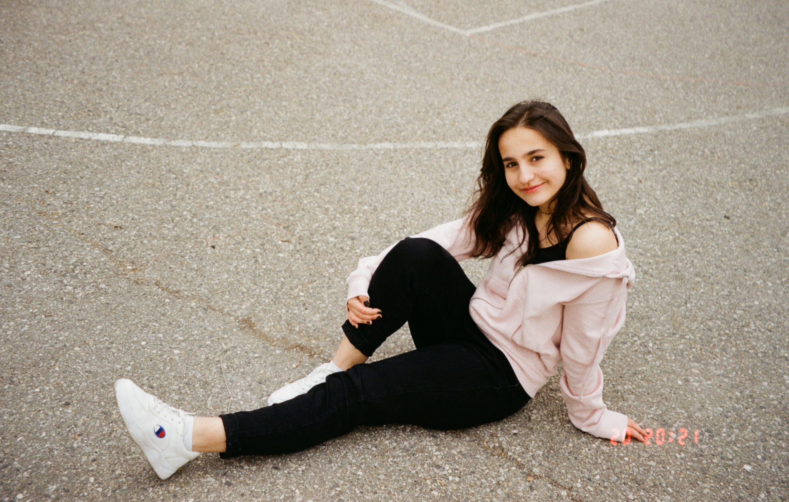

kodak color plus 200 для чайников
Относится к категории любительских пленок шириной 35 мм. Цветная негативная, идеально сбалансирована для использования при дневном освещении. Универсальная чувствительность 200 единиц. Данная фотоплёнка дает приятные ненасыщенные теплые тона. Что в сочетании с низкой ценой делает ее базовой у многих фотографов.
- Для Kodak Color Plus 200 критичен свет в кадре. Солнце, хоть в золотой час, хоть в зените, превратит вашу фотографию в то самое, что пытаются повторить в Фотошопе цифро-фотографы
- На мой взгляд, пускай это и самая дешёвая любительская плёнка, но если её правильно экспонировать, результат классный! Именно за этим я и пошла в плёнку — цвет, пластика, киношная картинка.
- Тут понимаешь, зачем нужна плёнка.В кадре сложное освещение. На цифре в таких случаях провалы в тенях или пересвет неба. Особенно здорово широкий ДД плёнки виден на фотографии с подсолнухом. На цифровой камере такой результат получится только с помощью HDR или совмещением кадров с разной экспозицией в редакторе.
- Я довольна Kodak Color Plus 200, доволен и тем, что понял как её готовят. Если меня попросят кратко охарактеризовать Kodak Color Plus 200, я скажу, что это летняя фотоплёнка, которая любит солнце.